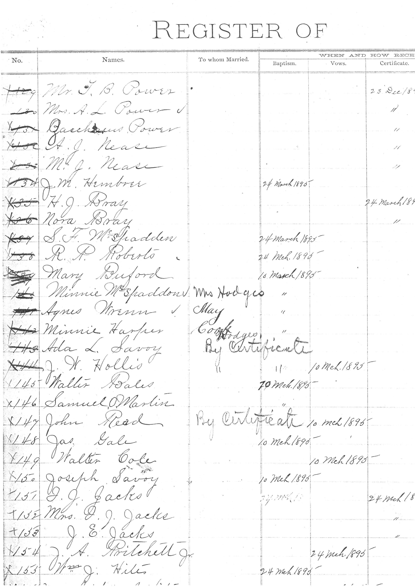

Churches keep records because communities need them. The register of infant baptisms, the membership rolls, the marriages performed, the deaths recorded — these are not only spiritual documents. In a frontier town in the 1870s and 1880s, before standardized civil registration, before the county had bureaucratic machinery for tracking births and deaths and marriages, the church register was often the only comprehensive record of who had been born, who had been married, who had died, and when.
The Savoy Methodist Church had organized in 1873, two years after the town itself. By 1880, seven years of records had accumulated in its register: baptisms, marriages, deaths, membership changes. The names of people who had come to Savoy from wherever they had started — Mississippi, Tennessee, Georgia, the older parts of Texas — and built their lives in a new town on a new railroad in Fannin County.
On the night of May 28, 1880, the cyclone came through and took those records.

The Methodist church and the seminary were among the few structures that survived the storm relatively intact. But the records inside — the paper memory of the congregation — did not survive. Perhaps they were in the part of the building that was damaged. Perhaps they were loose, on a desk or in a cabinet that was opened by the wind. Perhaps they simply were not there when the storm passed. The archive does not record exactly how they were lost, only that they were.
In the years after — by 1895, according to the replacement register that survives in this archive — someone undertook the work of reconstruction. They went to the surviving members, to people who might remember when they had been baptized or when they had joined or when they had left. They cross-referenced what they could. They wrote it all down in a new register.
"Probably in some instances incorrect." — note written in the margin of the replacement Savoy Methodist Church register, c. 1895, acknowledging that the original records were destroyed in the 1880 cyclone
And then someone — the person who compiled it, or perhaps someone who reviewed it afterward — wrote a note in the margin. Not an excuse, exactly. Not an apology. Just an acknowledgment, in the careful handwriting of a person who understood the limits of what memory could recover: probably in some instances incorrect.
This is what a disaster does to a community's memory. It doesn't erase it entirely — memory is more distributed than a single register, and communities hold their history in many forms. But it introduces uncertainty where there had been certainty. It forces a reliance on recollection rather than record. And it leaves behind, in the margins of the replacement documents, the honest admission that some things, once lost, can only be approximately recovered.
The 1895 register survives. The note survives. The original register does not.
All Tales